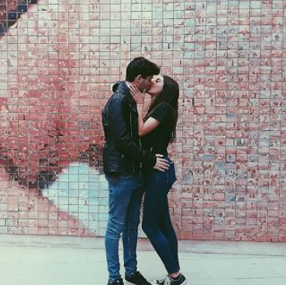

Carta per l'amor de me vida
Hola amor meu, he fet la meva carta per internet per a que puguis veure-la quan vulguis amb el mòbil o l'ordinador. No sé per on començar, a les altres cartes t'he expressat molt bé el que sento per tu, que es podria resumir en que ets el millor que m'ha passat a la vida. Aquest confinament ha sigut molt dur, però sabent que en el moment en el que acabés et veuria m'animava molt. Estar amb tu és lo més semblant que he experimentat a ser completament feliç, i és que m'has demostrat cada dia que ets un amor(des de fa 2 anys). Beneït el dia que vam començar a sortir, que estava nerviosíssim però tot va anar molt bé i a vegades aquests nervis tornen quan sé que et veuré. Però sé que els nervis em venen perquè m'emociono cada cop que et veig i amb raó perquè amb tu em sento al cel. En fi, no crec que em quedi molt a dir, suposo que gràcies per la sorpresa de l'altre dia un altre cop, em va alegrar el que no està escrit
